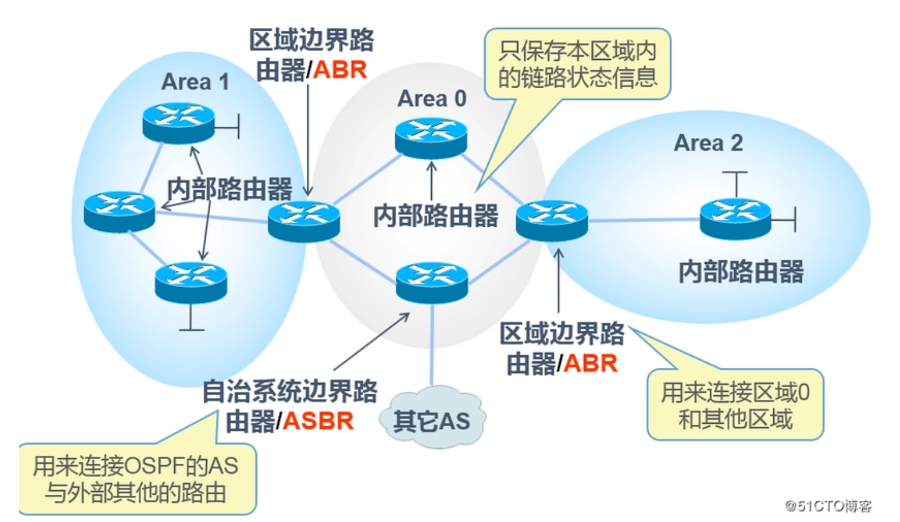
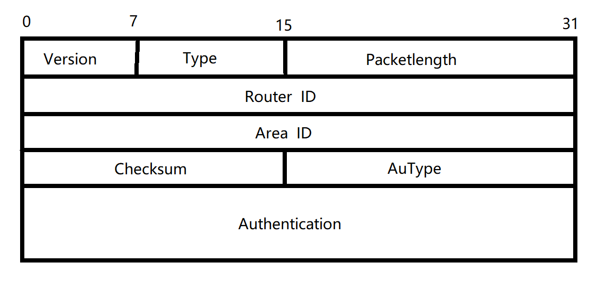
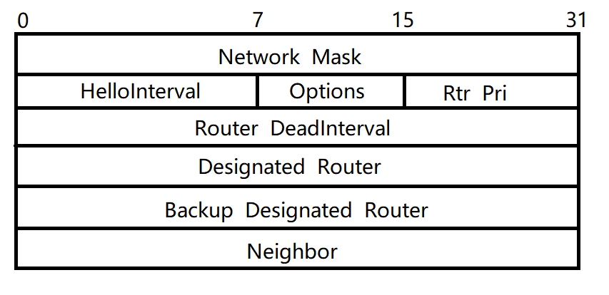
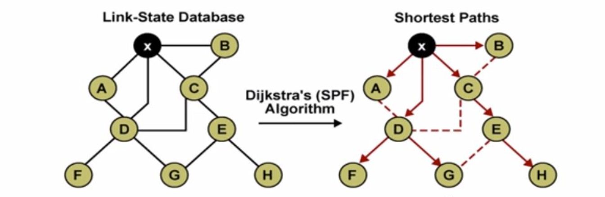

主动路由协议专题

路由信息协议(RIP)
$Router~Information~Protocol~version~1/version~2$
RIP v1
$RIP~v1$是一种分类内部网关协议(classful Interior Gateway Protocol)，属于距离向量协议，默认交换路由表间隔是30s，使用跳数作为距离向量，最大取值为15，15以上的取值认为不可达；除此之外，RIP v1还能够做到最多六条相同成本(equal-cost)的路径的负载均衡(load balancing)
RIP v1的有四点局限：
- 在更新路由信息时不发送子网掩码
- 更新时使用广播地址进行广播
- 不支持身份认证
- 不支持VLSM(可变长子网掩码)或者无类别域间路由选择(Classless Interdomain Routing, CIDR)
配置方式
router rip
#启用RIP协议
network address
#标识当前路由器直连的网段（不含子网掩码）
RIP v2
$RIP~v2$是$RIP~v1$的改进版本，与之共同的特性有：
- 属于距离向量协议，使用跳数作为距离向量单位
- 使用了挂起计时器以避免路由环路，默认计时180s
- 使用了水平分割的策略以避免路由环路
- 保持了将15跳作为最大跳数
两者差异比较
| RIP v1 | RIP v2 |
|---|---|
| 配置方便 | 配置方便 |
| 仅支持分类路由协议 | 同样也支持无类别路由 |
| 更新路由信息时不传递子网掩码 | 更新路由信息时携带子网掩码 |
| 不支持前缀路由，即网络内只能使用统一的子网掩码 | 支持前缀路由，即支持VLSM |
| 更新信息时没有身份认证 | 更新信息时支持身份认证 |
| 在255.255.255.255地址进行广播 | 在D类组播地址224.0.0.9进行组播，效率更高 |
配置方式
router rip
#启用RIP协议
version 2
#选用RIP v2
network address
#标识当前路由器直连的网段（可选后跟通配符掩码）
单域开放最短路优先(OSPF)
$Open~Shortest~Path~First(Single~Area)$
概述
OSPF是基于开放标准的链路状态路由协议，缘于其可扩展性，OSPF相对RIP协议来说正逐渐成为更被接受的内部网关协议(IGP)
路由信息
链路状态是由一个接口以及与之相连的邻接路由器关系来描述的，链路状态的集合构成链路状态数据库(topological database)，各个路由器执行Dijkstra Shortest Path First算法构建SPF tree，并将它们自己作为树根，通过SPF tree找出最优路径，将最优路径存进路由表
与RIP的比较
OSPF的特性有：
- 不使用跳数而是使用例如带宽的更具体的衡量标准
- 能适应大型网络
- 能够进一步将子网划分为多个域
- 支持VLSM
- 快速收敛
- 支持等成本多径
RIP的特性有：
- 使用跳数计数
- 由于跳数最多只有15跳，因此只适用于小型网络
- 扁平层次设计
- RIP v1不支持VLSM
相比于RIP，OSPF会选择实际距离(考虑传输时间)更近的路径，使用会更稳定耐用，可扩展性更强，大型的OSPF网络使用等级制(hierarchical)的设计
OSPF术语
Link
两台网络设备之间的物理连接
Link-State
两台路由器之间连接的状态，包括路由器接口信息以及其与邻接路由器的关系
Cost
基于链路的带宽赋给连接的一个值，用来衡量选择此连接的成本
Area
拥有相同域ID的路由器集合，在同一个域内的所有路由器都持有相同的链路状态信息
Neighborship Database
记录所有已经与路由器建立双向连接的邻居
Topology Database
记录同一个域中所有路由器的信息，可以整合出网络拓扑
Routing Table
路由表，有时也称为转发数据库(Forwarding Database)
Designated Router
DR，指定路由器，被选为代表该网络域的路由器
Backup Designated Router
BDR，备用指定路由器，当原DR下线后即成为DR
OSPF域
OSPF使用一个32位二进制数对域进行编号，也可以直接用十进制进行表示，即area 0等价于area 0.0.0.0，OSPF使用两层分级模型，在多域OSPF中所有的域都必须与主干area 0(backbone)连接

执行流程
OSPF共有七种状态，分别是Init, Two-Way, ExStart, Exchange, Loading, Full
OSPF报文类型
- Hello，功能是建立连接
- Database Description(DBD)，功能是描述数据库信息
- Link-State Request(LSR)，功能是发送链路状态请求
- Link-State Update(LSU)，功能是发送链路状态更新信息
- Link-State Acknowledgement(LSAck)，功能是确认链路状态信息
当路由器在某个端口上启动了OSPF进程后就会每隔一段时间再组播地址224.0.0.5上发送Hello报文，称为Hello Protocol，在广播多路访问和点对点网络中默认间隔是10s，而在NBMA网络中默认间隔是30s，直到初始化过程完成
OSPF报文首部

其中AuType代表身份认证类型(Authentication Type)，对于Hello报文来说Type域置为1
OSPF Hello报文首部

其中Rtr Pri表示Router Priority，如果有多个邻接路由器则会在Neighbor下继续加长
OSPF初始化大体流程
路由器向邻接路由器发送Hello报文时为Init State；当路由器收到邻接路由器的Hello报文后即进入Two-Way State；当路由器开始选举DR与BDR并发送DBD报文交换自己的优先度与Router ID时即进入ExStart State；当路由器收到其他路由器的DBD报文时进入Exchange State；当信息交换完毕，并且LSAck报文全部发送并接收后即进入Loading State，该过程部分路由器交换各网段的完整条目，其他路由器等待Loading State结束；全部条目交换完成之后就进入Full State
OSPF的网络类型
- 广播多路访问(Broadcast Multi-access)，例如以太网，FDDI和令牌环网
- 点对点网络(Point-to-point Network)
- 非广播多路访问(Nonbroadcast Multi-access, NBMA)
其中广播与非广播多路访问都需要选举DR，每一台路由器都会与DR和BDR形成邻接关系，DR向域内的所有其他路由器在组播地址224.0.0.5上发送链路状态信息，其他的路由器在组播地址224.0.0.6上进行确认
建立邻接关系
每个路由器每隔一段时间发送Hello报文，如果发现邻接节点就将其存入neighborship database中；当网络类型确定之后，根据当前网络类型和DR/BDR的存在与否决定是否需要进行第二步选举DR与BDR
选举DR与BDR
如果网络中只有一台路由器，则自动成为DR，后来加入网络的第一台路由器自动成为BDR
选举DR的机制
优先度(Priority)最大的路由器被选为DR，第二大的路由器被选为BDR，其中优先度的取值为0~255，默认值为1，如果取值为0则表示永远不会成为DR
如果选举阶段中出现优先度打平的情况，则比较Router ID。路由器ID是配置在路由器的环回地址(loopback IP address，只要配置了就不会关闭，一般用私有地址进行配置)，如果没有配置环回地址则用接口IP地址中对应值最大的代替，如果用来代表Router ID的接口关闭了，则该路由器必须重新建立邻接关系并重新发送LSAs(Link-State Advertisements)
DR与BDR均为终生制，即除非路由器关机，它们会一直担任相应的角色，如果DR关闭，则由BDR继任DR，并从剩下的路由器中选出BDR（即使新的BDR的优先度与路由器ID之和大于原来的BDR，它也只能先担任BDR）；如果BDR关闭，则从剩下的路由器中选出BDR，同样不可代替现有的DR
探索路由
路由器决定主从关系，多路访问网络中的DR和BDR交换LSAs，所有其他路由器向DR/BDR发送DBD报文；如果路由器对某个网段需求更多的信息，则进入Loading State，当所有路由器结束Loading后即达到Full State
选择合适路径
以自己为中心节点，将每条链路的成本作为测量标准，利用最短路算法计算出一张单源最短路无环拓扑，并将最短路径记录在路由表中，最多有4条等成本路径会被记录在路由表中

维护路由信息
OSPF在平时仅交换Hello报文以进行心跳检测，由于报文长度远小于RIP的拷贝路由表，因此网络负担远小于RIP；固定发送Hello报文的时间间隔称为hello-interval，而超过时间未收到Hello报文就认为路由器下线的时间间隔称为dead-interval，默认值为hello-interval的四倍
如果链路状态信息发生改变，相邻路由器将改变情况通过LSU报文告知DR，然后由DR告知其他路由器
链路成本
链路成本是一个16位二进制数，因此取值范围为1到65535，曾经的计算方案是$COST=\frac{10^8}{Bandwidth}$，其中带宽以bps做单位
常用介质的链路成本如下（成本与带宽有关，带宽越高，成本越小）：
| 介质 | 成本 |
|---|---|
| 56kbs串行链路(serial link) | 1785 |
| T1(1.544Mbps串行链路) | 64 |
| E1(2.048Mbps串行链路) | 48 |
| 4Mbps令牌环网(Token Ring) | 25 |
| 以太网(Ethernet) | 10 |
| 16Mbps令牌环网 | 6 |
| 100Mbps快速以太网和FDDI | 1 |